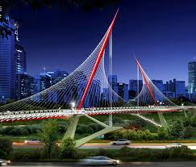
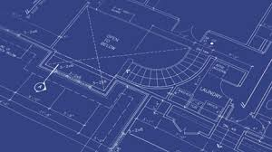

After High School I defiantly plan on going to college. I plan on going into college to get a degree in Civil Engineering. My top two choices for colleges right now are University of Texas Austin and Kansas State University.
I have always been a Longhorns fan since I was little. I have rooted for Texas every chance I get for any sport. I remember vividly going down to see a football game with my family. The atmosphere was great from all the students and fans, just walking around you could feel all the team spirit. When I started thinking of colleges Texas was right up there from the start. For more than just being a favourite school but for having a great engineering program.
Then I visited K-State. I went to K-State because of their engineering programs but when I went on campus I fell in love. The campus drew me in I loved every part of the campus. It had the feel of a smaller college but it is actually a large college. And not many people know this, even at K-State, but their QB Jake Waters was born and raised in Council Bluffs Iowa and went to St. Albert's High School.
A long time ago I decided on what I wanted my career to be. I decided on Civil Engineering. It all started when a group of Civil Engineers came to my school in 6th grade and gave a presentation on it. I fell in love with the idea of building bridges and the rest of the disciplines of civil engineering.

Civil Engineering has many disciplines and ranges from building bridges or water damns even to building roller coasters. That is what makes Civil Engineering so interesting to me. I am taking a class on Civil Engineering now, it is helping to teach me all about the disciplines and I think will help me to decide which discipline is the most interesting and right for me. Even though I decided I wanted to be a Civil Engineer a long time ago the more time that I put into it, the more and more I become more interested.
If you want to learn more on Civil Engineering visit this site www.bls.gov